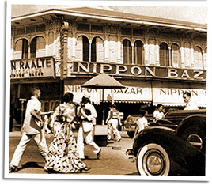

|
j
a v a s c r i p t |
February 20, 1944
Tribune: "No landing on [Truk] Atoll, says Knox." He is supposed to feel "uneasy over the possible outcome." The word "atoll" is used three times. The much-bragged about Japanese naval base in Truk is now a mere atoll. The Burma offensive gets six lines in a corner of page 1: "Nippon forces occupy two hills." Back-pedaling furiously, Maharajah (Icasiano) concedes that not all Buy and Sell dealers made a killing, that there were some honest people in the Economic Police, and that Real Estate Brokers were not part of the Buy and Sell crowd. The exodus to the provinces, even by those with steady jobs, continues. Living costs here are impossible. A rice ration of only 60 grams per day is insufficient, if you can get it. Rice is P10 a ganta here but 25c in Vigan — and that's already five times prewar. Even so, it's said that rice from Zambales and the Cagayan Valley is strictly for the Japanese Army. It's a favor, you see, because we can't transport it and they obviously can. Our railroads are in such a poor state — cars pulled by locomotives that belong in the Smithsonian — that passengers, if allowed, can hardly take any luggage. Yet what a splash the Japanese made when the lines reopened. What will the poor eat when all transportation into Manila stops? Well-to-do families have, on average, a three-month reserve of food; the poor have nothing. Everyday, one sees kids walking around with great sores on their skinny legs — the effect of mosquito bites on malnourished bodies. A bit of camote with diluted lugao is not enough to sustain a body — and that's third-class rice; the Japanese Cavalry horses get Ilon-Ilon. The best rice goes to the Japanese Navy, followed by the Japanese Army, their Cavalry horses, and finally, whatever's left is ours.

Nippon Bazaar
Against all this, the government stands powerless. It talks of encouraging people to go to the provinces, but does nothing. As for the Japanese, it's our problem — we're independent, you see? Manilans haven't tasted sugar for sixty days, but Mr. Matsura of the Nippon Bazaar has sacks of it in reserve. He has a dokar and three horses — their food sweetened with pure refined sugar because pulot [raw sugar syrup] and panocha [dry raw sugar] is unavailable. |
|
|
|
|